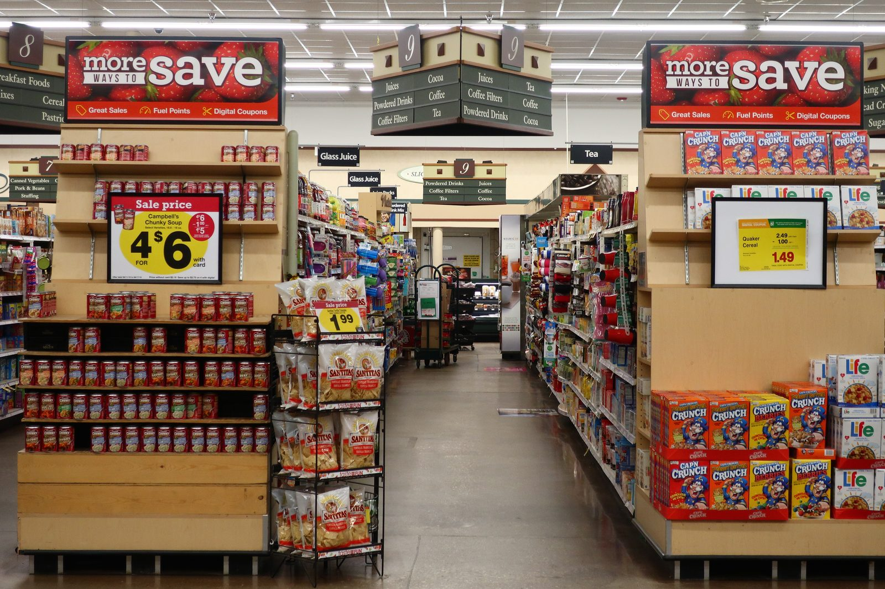

Do Common Food Preservatives Raise Blood Pressure and Heart Risk?
SEPTEMBER 21, 2026

A study published in the European Heart Journal on 20 May 2026 followed 112,395 French adults for a median of 7.9 years and found that the people with the highest cumulative intake of preservative food additives went on to develop high blood pressure and cardiovascular disease at measurably higher rates than the people with the lowest. Eight individual preservatives were each associated with hypertension on their own, after correction for multiple testing: potassium sorbate (E202), potassium metabisulphite (E224), sodium nitrite (E250), ascorbic acid (E300), sodium ascorbate (E301), sodium erythorbate (E316), citric acid (E330) and extracts of rosemary (E392). That fourth one is vitamin C, which is not a name anybody expects to meet on a list of cardiovascular suspects — and it is a fair warning, up front, about how strange and how unfinished this particular set of results is.
What NutriNet-Santé Is, and How It Measured a Preservative
NutriNet-Santé is a French web-based prospective cohort launched in 2009 by INSERM and partner institutions, registered as ClinicalTrials.gov NCT03335644. Volunteers enrol online and then repeatedly fill in 24-hour dietary records — everything eaten across a day, logged in detail. This analysis, led by doctoral researcher Anaïs Hasenböhler with research director Mathilde Touvier as guarantor, drew on up to 96 such records per participant between 2009 and 2024, and the participants were 78.7% women with a mean age of 42.8 years at enrolment.
The interesting methodological work is in how you get from "I ate a ham sandwich" to a milligrams-of-nitrite-ion-per-kilogram-of-body-weight figure at all. The dietary records capture commercial brand names, not just food categories. Those brands were matched against multiple food-composition databases and against purpose-run laboratory assays of actual food matrices, date-to-date, so that a product reformulated in 2016 is scored differently before and after. That yielded exposure estimates for 58 distinct preservative substances consumed by at least one participant, which the authors then summed into two groups — antioxidant preservatives (the ascorbates, erythorbates, tocopherols) and non-antioxidant ones (sorbates, sulphites, nitrites, nitrates, benzoates, propionates) — and also examined one substance at a time. Where a compound also occurs naturally in food, as ascorbic acid and citric acid plainly do, each model was additionally adjusted for the intake of that same substance from natural sources, so the exposure being tested is the additive, not the vitamin in an orange.
Some numbers on how ordinary this exposure is: 99.5% of participants consumed at least one preservative additive. Citric acid reached 91.3% of them, ascorbic acid 83.0%, sodium nitrite 73.3%, potassium sorbate 65.3%. Nobody in the cohort exceeded the European Food Safety Authority's acceptable daily intake for sorbates, erythorbates or nitrates; 96 people exceeded it for sulphites and 54 for nitrites, out of 112,395. This is not a story about overdosing. It is a story about ordinary intakes at legal levels.
The Numbers
Outcomes were captured through participant reporting, linkage to the French national health insurance database and the national mortality registry, and coded to ICD-10. Over follow-up there were 5,544 incident hypertension cases and 2,450 incident cardiovascular disease cases — 33 of them fatal — comprising 1,308 coronary heart disease events (myocardial infarction, acute coronary syndrome, angioplasty, angina pectoris) and 1,142 cerebrovascular events (stroke and transient ischaemic attack).
Comparing the highest third of consumers with the lowest, using Cox models adjusted for age, sex, height, BMI, physical activity, smoking status and pack-years, education, family history, energy, alcohol, saturated fat, sodium, fibre, sugars, fruit and vegetables, dairy, and red and processed meat:
- Total non-antioxidant preservatives — hypertension HR 1.29 (95% CI 1.20–1.39); cardiovascular disease HR 1.16 (1.04–1.29); coronary heart disease HR 1.26 (1.10–1.46).
- Total antioxidant preservatives — hypertension HR 1.22 (1.13–1.31).
- All preservatives combined — hypertension HR 1.24 (1.16–1.34).
Among individual substances, the largest hypertension associations were potassium sorbate at HR 1.39 (1.28–1.50) and citric acid at 1.25 (1.16–1.34). The rest of the eight clustered between 1.10 and 1.16: sodium nitrite 1.16 (1.08–1.25), potassium metabisulphite 1.16 (1.08–1.25), sodium erythorbate 1.14 (1.06–1.22), ascorbic acid 1.14 (1.06–1.22), sodium ascorbate 1.12 (1.04–1.20), rosemary extract 1.10 (1.02–1.18). For cardiovascular disease, exactly one individual additive survived correction for multiple testing: ascorbic acid, HR 1.15 (1.04–1.28).
Two details are worth more than the headline ratios. First, in the same cohort and the same models, higher sodium intake carried a hypertension hazard ratio of 1.13 (1.04–1.23) — smaller than several of the preservative associations. That is not a claim that preservatives matter more than salt; the exposure contrasts and the measurement error are not comparable. It is a claim that these associations are not trivially small by the standards of the diet-and-blood-pressure literature. Second, the authors ran hip fracture as a negative control — an outcome no plausible mechanism connects to a preservative — across 613 cases, and found nothing (all P > .05), which is the kind of check that makes a null a little more believable when it appears.
The paper reports relative risk, not absolute. Working the published case counts by hand: 5,544 hypertension diagnoses among 103,386 people over a median 7.6 years is roughly 5.4%, so a 29% relative increase on that base is on the order of one and a half extra cases per hundred people across about seven and a half years. Cardiovascular disease sits on a base of about 2.2% (2,450 cases in 110,356 people), where a 16% increase is a few tenths of a percentage point. That arithmetic is mine, not the authors', it compares thirds rather than everyone against nobody, and it belongs in the room whenever a "29% higher risk" headline goes past.
Why Vitamin C Is on the List, and Why That Is the Strangest Part
The authors offer mechanisms, and they are candid that the mechanisms fit some of the eight far better than others. Sorbic acid — the basis of potassium sorbate — is chemically a trans fatty acid, and the cardiovascular harm of trans fats is about as well established as anything in nutrition; in vitro work suggests trans configurations stimulate glucagon and insulin secretion more potently than their cis counterparts, which is a plausible route from a mould inhibitor to insulin resistance to blood pressure. Nitrites have a longer-standing case: oxidative damage and the formation of N-nitroso compounds during meat processing. The team's mediation analysis found that 16.2% (95% CI 7.2–55.7%) of the non-antioxidant-preservative association with cardiovascular disease ran through hypertension, and 4.7% (1.7–24.8%) through type 2 diabetes — the diabetes link being one the same cohort reported separately in Nature Communications in January 2026.
Then there is the awkward half. Citric acid and carnosic acid, the active antioxidant in rosemary extract, have shown anti-hypertensive effects in hypertensive animal models — the opposite direction to what this cohort found. Sulphites are known to provoke allergic and pseudo-allergic reactions, which would push toward vasodilation, and the authors write plainly that evidence of sulphites raising blood pressure "is lacking." And dietary vitamin C intake, measured as a nutrient rather than as an additive, has generally tracked with lower cardiovascular risk in prior work. The authors' own hedge is that food matrix, dose and chronicity may differ between vitamin C eaten in fruit and ascorbic acid added to a beverage, and that rodent studies of chronic pharmacological doses of vitamins C and E did raise fasting glucose and insulin resistance — while noting, immediately, that permitted additive doses are physiological rather than pharmacological. Read honestly, that paragraph is a research agenda, not an explanation.
Where the Evidence Is Weak
This is an observational cohort. It cannot establish cause, and the authors say so in the first line of their limitations. What they can say is that models survived adjustment for a long list of confounders including the ultra-processed share of the diet under the NOVA classification, and that the E-values — a measure of how strong an unmeasured confounder would have to be to explain away a result — were at or above 1.5 for every significant association except rosemary extract, which came in at 1.43.
The cohort itself is a volunteer sample: more female (78.7%), more educated and healthier in lifestyle than the French population at large, with 11.5–11.9% dropping out during follow-up, and with ethnic and racial data unavailable under French law. Hypertension prevalence in the study, about 5%, is far below the roughly 30% national figure, mostly a function of the young minimum enrolment age. Diet was self-reported, and no validated biomarker of exposure exists for most of these additives — misclassification of that kind usually pushes an association toward zero rather than inventing one, but it is real. And the French food supply is not the American one, even though, as the paper notes, the preservatives studied are authorised across the European Union and also widely used in North America.
What the evidence shows. In one prospective cohort of 112,395 French adults followed a median of 7.9 years, the top third of consumers of non-antioxidant preservative additives had a 29% higher rate of new hypertension (HR 1.29, 95% CI 1.20–1.39) and a 16% higher rate of cardiovascular disease (HR 1.16, 1.04–1.29) than the bottom third, with antioxidant preservatives carrying a 22% higher hypertension rate (HR 1.22, 1.13–1.31). Eight individual additives — potassium sorbate, potassium metabisulphite, sodium nitrite, ascorbic acid, sodium ascorbate, sodium erythorbate, citric acid and rosemary extract — were each independently associated with hypertension, and ascorbic acid alone with cardiovascular disease (HR 1.15, 1.04–1.28). These are associations in an observational study, at intakes almost entirely within legal limits, with mechanisms that fit some compounds well and others badly or backwards. The authors' own conclusion is that the findings need confirmation in other cohorts and experimental work on mechanism before regulators act on them — not that causation has been shown.
What I'd do. This is one person's reading of one study, about one person's own kitchen, and not a recommendation to anybody else. With that said — the natural question after a result like this is what an American shopper could even do with it, and the answer turns out to be more concrete than I expected, because seven of the eight are legally required to announce themselves.
American labels don't carry E-numbers; the compound is spelled out. And under 21 CFR 101.22, a food containing a chemical preservative must declare both the ingredient's common name and what it is doing there — "preservative," "to retard spoilage," "a mold inhibitor," "to help protect flavor," "to promote color retention." So on a US panel these read as "potassium sorbate (preservative)" or "sodium nitrite (to promote color retention)." The exception is rosemary extract, which slips the requirement entirely: the regulation's own definition of a chemical preservative excludes "spices or oils extracted from spices," and rosemary is Generally Recognized As Safe in the US as both a spice and a natural extractive, so it can appear as plain "rosemary extract" with no tag attached. If I were tracking the eight, that is the one I would expect to miss.
Where they actually live, in this study's own source data and in US practice: sodium nitrite is the cured-meat one — bacon, hot dogs, deli ham and turkey, salami, bologna — and 54.0% of the cohort's nitrite intake came from processed meat. Sodium erythorbate and sodium ascorbate ride along in the same products as cure accelerators; USDA rules require 550 ppm of one or the other in pumped bacon and cap them at 547 ppm elsewhere (9 CFR 424.22), so on an American bacon label the trio usually travels together. Sulphites, including potassium metabisulphite, concentrate in wine and dried fruit — 83.7% of the cohort's sulphite intake came from alcoholic drinks — and the US requires them named on the label at 10 ppm or more of total sulphur dioxide, which is why a wine bottle says "contains sulfites." Potassium sorbate turns up in shredded and sliced cheese, wine, dried fruit, tortillas and baked goods, yogurt, dressings and condiments. And citric acid and ascorbic acid are simply everywhere — sodas, candy, canned goods, sauces, juice, bread dough, breakfast cereal.
Which is where I land on "natural" and "organic" as shortcuts: partially useful, and misleading in the specific places it matters. Potassium sorbate is not on the USDA National List, so it isn't permitted in certified-organic processed food. But ascorbic acid is an allowed synthetic under 7 CFR 205.605(b) and citric acid an allowed nonsynthetic under 205.605(a) — the two most widely consumed of the eight are explicitly organic-legal. And organic "uncured" bacon and hot dogs are cured with celery powder, whose nitrate bacteria convert into the same nitrite; the label says something like "no nitrates or nitrites added except those naturally occurring in celery powder," and FSIS said in December 2020 that it intends to propose prohibiting exactly that claim, though I could not find a final rule as of today. "Natural," meanwhile, has never been formally defined by the FDA at all.
So my own approach is about proportion rather than avoidance. Chasing citric acid and ascorbic acid across a grocery store strikes me as unwinnable and, given how confusing their mechanism story is, probably not the part of this worth the effort. The cured-meat cluster — nitrite plus erythorbate or ascorbate — is the one where this study and a much older body of processed-meat research point the same direction, so it is the one I treat as settled enough to act on for myself. Beyond that, the exposure contrast between the study's top and bottom thirds is really the contrast between a diet built mostly from packaged goods and one built mostly from food that spoils, which is where French and American dietary guidance already sit. The paper's own conclusion makes that point: these results don't call the DASH or Mediterranean patterns into question, they sit alongside them.
Where I Could Be Wrong
- A cohort is not a trial. Everything above is association. Nobody randomised anybody to eat potassium sorbate for eight years, and residual confounding — some habit that travels with heavily preserved food and was not among the two dozen adjustments — remains the single most likely alternative explanation, E-values notwithstanding.
- The mechanism story is half-missing, and half-backwards. Citric acid and rosemary's carnosic acid have looked antihypertensive in animal models; dietary vitamin C has looked protective. An association whose proposed mechanism points the other way is exactly the kind that fails to replicate.
- Same cohort, same team, many outcomes. NutriNet-Santé has now produced preservative-additive papers on cancer (BMJ) and type 2 diabetes (Nature Communications) as well as this one, all in 2026. Consistency across outcomes is genuine support; it is also a reason to want an independent cohort, in another country, run by somebody else, before treating the effect as established.
- French diets are not American diets. The compounds are authorised on both sides of the Atlantic, but the products, the portion sizes and the intake distributions are not the same. I have written the US-label section from regulations and from the study's own source-food breakdown, which is not the same thing as a US cohort measuring US exposure — and no such study exists that I could find.
- The absolute-risk arithmetic is mine. The paper reports hazard ratios; I derived the rough percentage-point figures from its published case counts, which is a crude translation that ignores the tertile structure and the time-dependent exposure modelling.
- The label-reading may be less reliable than it sounds. The "chemical preservative" declaration rule has real exemptions, ingredients sourced from other ingredients can be declared differently, and I have not audited actual packages against the regulation — I have read the regulation.
Sources
- Hasenböhler A, Javaux G, Payen de la Garanderie M, et al. (Touvier M, guarantor). Preservative food additives, hypertension, and cardiovascular diseases: the NutriNet-Santé study. European Heart Journal, 20 May 2026. doi:10.1093/eurheartj/ehag308 · PMID 42161430
- Bonaccio M, de Gaetano G, Iacoviello L. Food preservatives as a potential pathway linking modern diets to cardiovascular risk. European Heart Journal editorial, 17 June 2026. doi:10.1093/eurheartj/ehag406
- European Society of Cardiology. Common food preservatives linked to high blood pressure and heart disease. Press release, May 2026. escardio.org
- ClinicalTrials.gov. The NutriNet-Santé Study, NCT03335644 — the cohort's registration and design. clinicaltrials.gov
- U.S. Food and Drug Administration. 21 CFR 101.22 — Foods; labeling of spices, flavorings, colorings and chemical preservatives. ecfr.gov
- U.S. Department of Agriculture, Food Safety and Inspection Service. 9 CFR 424.22 — Certain other permitted uses (sodium erythorbate and sodium ascorbate limits in cured meat). ecfr.gov
- U.S. Food and Drug Administration. 21 CFR 130.9 — Sulfites in standardized food (the 10 ppm declaration threshold). ecfr.gov · Food Allergy Research & Resource Program, University of Nebraska. Sulfites — USA. farrp.unl.edu
- U.S. Department of Agriculture, Agricultural Marketing Service. The National List (7 CFR 205.605 — substances allowed in organic processed food). ams.usda.gov
- U.S. Food and Drug Administration. Use of the Term "Natural" on Food Labeling. fda.gov
- U.S. Department of Agriculture, Food Safety and Inspection Service. Petition to clarify labeling of meat processed with non-synthetic nitrates and nitrites (the 2019 CSPI petition and FSIS's December 2020 response). fsis.usda.gov
- U.S. Food and Drug Administration. 21 CFR 182.20 — Essential oils, oleoresins (solvent-free), and natural extractives (including distillates) — rosemary's GRAS listing. ecfr.gov
This is one reader's reading of the research, not medical advice. If something here touches on your own health, take it to a clinician who knows you — and read how these entries are put together.